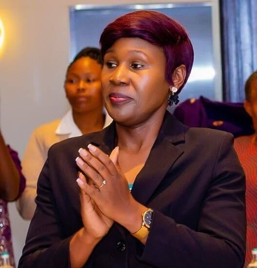

REV PURITY ACHERO
BOARD CHAIR
Life & Etiquette Coach | Pastor |Mentor
Read More
Purity Achero has close to 10 years of experience as a life and etiquette coach at Purity International Consultancy LTD. She is dedicated to fostering personal growth, ethical leadership, and youth mentorship. She is also an ordained minister and Executive Pastor at PEFA Church Gimu, where she provides pastoral care, premarital counseling, and spiritual guidance while mentoring young adults.
Her mission is to empower individuals and organizations to unlock their full potential by addressing emotional well-being, personal development, and leadership skills.